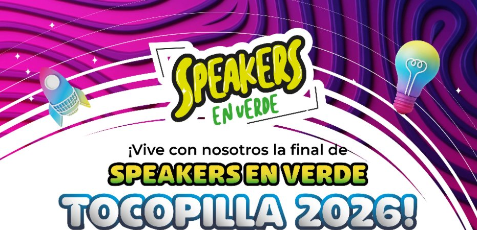
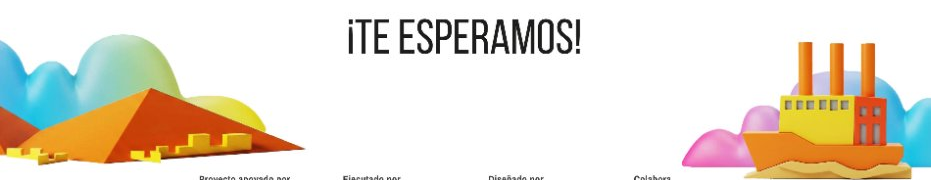
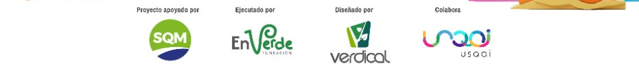
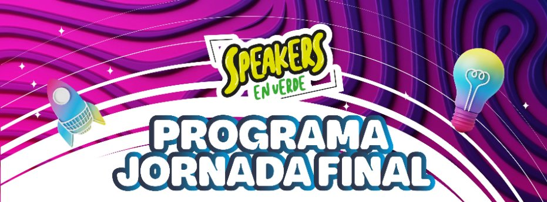

Te invitamos a conocer las innovadoras ideas de proyectos desarrolladas por equipos escolares del programa Speakers en Verde Tocopilla 2026, una iniciativa que promueve habilidades emprendedoras y comunicacionales en niñas, niños y adolescentes.
Tras completar su proceso formativo, los equipos presentarán sus propuestas frente al jurado, en una entretenida jornada que marcará el cierre de la sexta edición.
El evento se realizará el día Viernes 13 de Noviembre desde las 10:30 horas en el Laboratorio de Emprendimiento USQAI de la Universidad Católica del Norte, ubicada en Avenida Angamos 0610, Antofagasta.


Desde 2019 creando puentes entre la educación escolar y la sustentabilidad en la Región de Antofagasta.
Speakers en Verde se ejecuta en la Región de Antofagasta desde el año 2019, abarcando distintas comunas y alianzas interinstitucionales para promover la innovación ambiental en etapas tempranas.
En la edición 2022 (impulsada por Corfo), Fundación Minera Escondida (FME) ya nos acompañó como parte del jurado (representada por Jenny), consolidando la relevancia de la iniciativa.
Esta versión reúne a 10 equipos escolares de 9 establecimientos educacionales de Tocopilla, con una delegación de más de 80 personas que se trasladarán a Usqai UCN en Antofagasta.
Un proceso anual basado en enfoques participativos, indagatorios y aprendizaje experiencial.
Los jóvenes que participan en programas de emprendimiento tienen mayor probabilidad de desarrollar habilidades críticas como creatividad, resiliencia y resolución de problemas.
Aborda directamente las brechas detectadas en la región y los lineamientos de la Estrategia Regional de Innovación mediante talentos escolares.
Educación ambiental, modelo de negocios escolar, expresión escénica, tolerancia a la frustración y oratoria de alto impacto.
Plan de trabajo, estado del arte y primeras reuniones con los colegios de Tocopilla para entregar las bases.
Dar a conocer los alcances, objetivos y detalles del programa a los grupos beneficiarios.
Llamado abierto para equipos de Tocopilla entre sexto básico y cuarto año medio.
Selección de proyectos de acuerdo a criterios de bases, priorizando soluciones ambientales locales nacidas en el aula.
Acuerdo y compra de materiales, insumos y fletes directamente entregados en cada escuela para prototipar.
Talleres en comunicación efectiva, resolución de problemas, modelo de negocios y expresión escénica.
Acompañamiento presencial y remoto junto a profesores líderes para resolución de dudas técnicas.
Evaluación de incorporación de herramientas para seleccionar a los clasificados a la final comunal.
13 de Noviembre en Usqai UCN: Presentación de pitch de 5 minutos ante jurado calificador y premiación.
Conoce cada una de las iniciativas desarrolladas por las escuelas de Tocopilla.

Impulsando el ecoemprendimiento y el talento escolar de la Región de Antofagasta.
Impulsa activamente soluciones sustentables en la región.
Liderazgo territorial y acompañamiento en Tocopilla.
Diseño metodológico y mentoría experta en oratoria.
Laboratorio de Emprendimiento UCN, anfitriones de la final.
Estaríamos muy complacidos de incorporar formalmente la presencia e imagen de FME en esta instancia final (presencia de marca en gráficas y videos de la jornada), si ustedes así lo requieren. Su recordada participación en el jurado 2022 con Jenny enaltece este proceso.